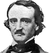

Edgar Allan Poe: Best known for his poems and short fiction, Edgar Allan Poe, born in Boston, Jan. 19, 1809, died Oct. 7, 1849 in Baltimore, deserves more credit than any other writer for the transformation of the short story from anecdote to art. He virtually created the detective story and perfected the psychological thriller. He also produced some of the most influential literary criticism of his time -- important theoretical statements on poetry and the short story -- and has had a worldwide influence on literature.
He was born as Edgar Poe in Boston, Massachusetts; his parents died when he was young. Poe was taken in by John and Frances Allan, of Richmond, Virginia, but they never formally adopted him. After spending a short period at the University of Virginia and briefly attempting a military career, Poe parted ways with the Allans. Poe's publishing career began humbly, with an anonymous collection of poems, Tamerlane and Other Poems (1827), credited only to "a Bostonian".